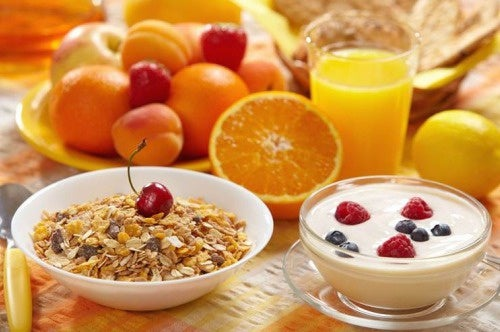
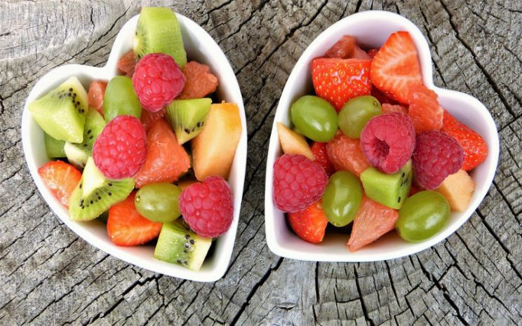
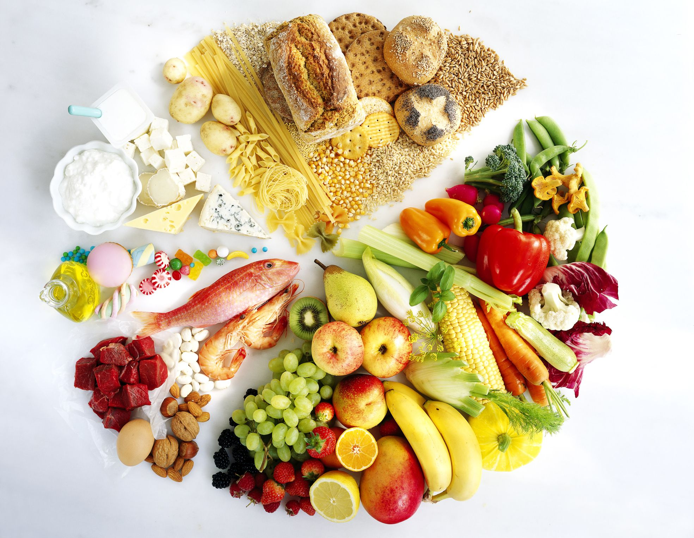
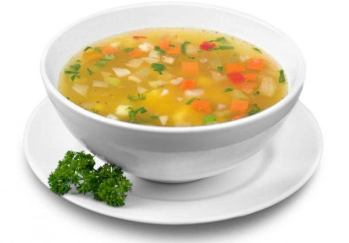
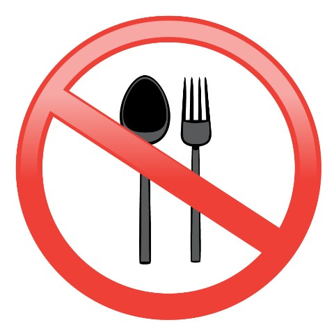

Desayuno y Merienda
- Infusión de té, café , mate, yerbeado o hierbas sin azúcar, con edulcorante
- Taza de leche descremada o yogurt diet

Opciones de panificados (elegir una alternativa por día)
- Pan integral - 1 puño
- Discos de arroz - 4 unidades
- Galletas con salvado - 5 unidades
- Galletas de agua - 5 unidades
- Tostadas integrales - 5 unidades
- Galletas semidulces de vainilla sin relleno - 5 unidades
- Copos de cereales sin azúcar - 1 taza
- Pan de molde integral diet - 2 rebanadas finas
Colación Media Mañana - Media Tarde
- Infusiones con edulcorante
- Caldos de verduras sin grasa
Opciones
- Tutuca
- Barra de cereales light
- Fruta
- Yogurt diet
- Taza de copos de cereales sin azúcar, solos o con leche o yogurt
- Taza de pororó sin azúcar
- Turrón
- Galletas de arroz

Almuerzo

Principal
- Caldo de verduras (sin hueso, sin carne, sin agregados de fideos, etc)
- 1 mano de carne (vacuna, ullo sin piel, hígado, corazón, mondongo, pescado fresco o en lata, jamón o paleta cocidas)
- 2 puños de verduras o ensaladas crudas o cocidas con poco aceite
- Elegir entre:
- Un puño de papa, arroz, fideos, semola o legumbres
- Una porción pizza, tarta de acelga o jamón y queso o empanada de acelga o de jamón y queso (4 o 5 veces por semana)
Postres
- Fruta
- Postre diet
- Gelatina diet
- Helado diet
Bebidas
- Agua
- Soda
- Jugos
- Gaseosas dietéticas
- Agua saborizada diet
Cena
-
- Caldo de verduras con o sin agregados de fideos, avena, etc
- Plato grande de verduras o ensaladas (excepto papa)
- Huevo ( 2 o 3 veces por semana), un trozo de queso o palma de carne magra
- Fruta
- Igual desayuno

No consumir
- Alfajores
- Carnes con hueso
- Cerveza
- Chizitos
- Chorizos
- Conitos
- Cremas
- Empanadas de carne
- Estofados con frituras
- Facturas
- Galletas dulces
- Gaseosas comunes
- Guisos
- Jaleas
- Jugos con azúcar
- Jugos envasados
- Manies
- Manteca
- Margarina
- Mayonesa
- Mermeladas o dulces comunes
- Miel
- Otras achuras
- Otros fiambres
- Palitos salados
- Pan casero
- Papas
- Papas fritas
- Pastas rellenas
- Picadillo
- Salame
- Sopaipillas
- Tortitas
- Vino